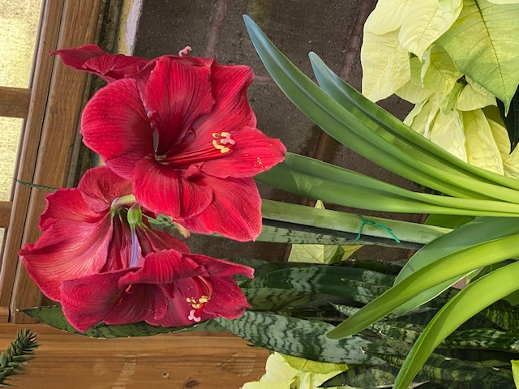

The Brown family begin with the union of Reverend Clinton Brown and Lillie Gay Pearson. From this union ten children was borned; three boys and seven girls. The Brown family lived in Sparta Georgia. Sparta is a small city in the southern part of Georgia. Sparta is mostly a rural city with many acres of farm land. Clinton farmed and the family grew corn, peas and sweet potatoes. The animals on the farm was chichen and pigs. Most of the produce the family used were grown on the farm. Life was simple and the children were special to both parents. Going to church and making GOD the master of our lives!
